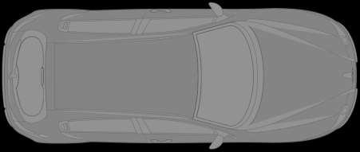
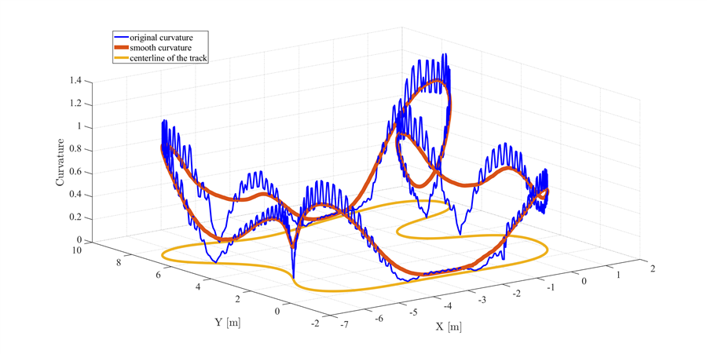

Driving
Autonomous Driving
Automated parking, yaw stability, cooperative localization, and vehicle platoon control.
Zhejiang University · Control Science and Engineering
We study control, planning, and learning for autonomous vehicles at the limits of handling.


DDRX builds autonomous driving, drifting, and racing systems that combine model predictive control, learned dynamics, safety filters, and real-time platform validation.
Driving
Automated parking, yaw stability, cooperative localization, and vehicle platoon control.

Drifting
Learning-based MPC, Gaussian processes, iLQR, and safe control near tire-force limits.

Racing
MPCC planning, overtaking, onboard learning, and scaled vehicle competition systems.
Public links from Zhejiang University, DDRX, DBLP, ORCID, and OpenReview.